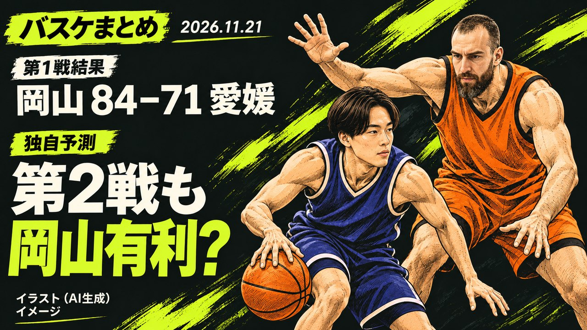

愛媛対岡山を検証し第2戦を予測、岡山が84-71で先勝

11月20日の愛媛オレンジバイキングス対トライフープ岡山は、岡山が84対71で勝ちました。
この記事では、第1戦の差がついた理由を検証します。21日14時05分に始まる第2戦の予測も出します。
【検証】第1戦は岡山が84-71で勝利
第1戦は松山市総合コミュニティセンターで行われました。岡山が13点差をつけて勝ち、連勝を12に伸ばしました。
岡山は14勝5敗で、西地区の2位です。愛媛は7勝11敗で、南地区の4位です。
前日の試合前予測は、岡山の勝利でした。点差は10点以内を見込みましたが、実際は13点差でした。
【検証】差がついたのはリバウンドとスティール
勝敗を分けたのは、リバウンドとスティールの数です。リバウンドは岡山が38本で、愛媛は26本でした。
スティールは岡山が7本で、愛媛は3本でした。速攻の得点も、岡山の7点に対して愛媛は2点でした。
| 項目 | 愛媛 | 岡山 |
|---|---|---|
| 得点 | 71 | 84 |
| 3ポイント | 6/21 | 12/29 |
| 2ポイント | 21/38 | 17/40 |
| フリースロー | 11/19 | 14/20 |
| リバウンド | 26 | 38 |
| アシスト | 20 | 18 |
| スティール | 3 | 7 |
| ターンオーバー | 12 | 11 |
| ブロック | 8 | 3 |
3ポイントの成功率は、岡山が約41%で愛媛は約29%でした。
外から決めた差が、そのまま得点差になりました。
愛媛はブロックが8本と、岡山の3本を上回りました。ゴール下で粘りましたが、リバウンドで押されました。
【検証】両チームの主な選手
岡山のレイナルド・ガルシア選手は、23得点と6スティールをあげました。貢献度（EFF）は26でした。
ジョシュ・スコット選手は16リバウンドと5アシストをあげ、EFFは21でした。
笠井康平選手は3ポイント3本を含む11得点でした。中村瑞稀選手も10得点をあげました。
愛媛のネマニャ・ラドヴィッチ選手は22得点で、EFFは27と全体で最も高い値でした。2ポイントを12本中10本決めています。
シャキール・ハインズ選手は20得点でした。それでもラドヴィッチ選手のプラスマイナスは-17で、出場中に点差を広げられました。
【分析】第2戦の見どころ
愛媛は、外からのシュートを増やせるかが鍵です。第1戦は3ポイントを21本打って、6本の成功にとどまりました。
リバウンドの差も縮めたいところです。岡山はスコット選手が1人で16本を取りました。
愛媛のミッチェル・ワット選手と岡山の横川俊樹選手は、インジュアリーリストに載っています。第1戦の公式記録に、2人の名前はありません。
【予測】第2戦も岡山が有利
予測は、岡山の勝利です。12連勝中の勢いと、リバウンドとスティールで上回った点が根拠です。
岡山はアウェーで10勝2敗と、遠征に強いチームです。愛媛はホームで4勝6敗にとどまります。
愛媛にも勝ち筋はあります。ラドヴィッチ選手とハインズ選手の得点力は、岡山の守備に通用しました。
点差は第1戦より縮まる可能性もあります。2日連続の対戦では、前日の内容を踏まえた調整が入るためです。